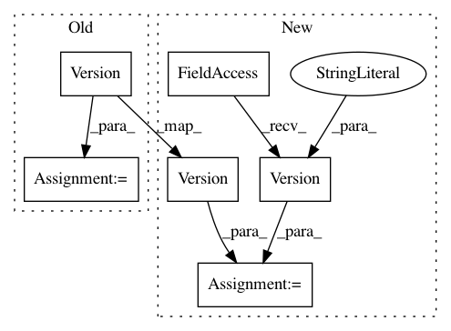

8b2e30caef4bd2254fc589890e196bb8e72b265d,tensorflow_datasets/image_classification/imagenet_v2.py,,,#,22
Before Change
// Note: Bump the version if the links change.
_VERSION = tfds.core.Version("1.0.0")
_ROOT_URL = "https://s3-us-west-2.amazonaws.com/imagenetv2public"
_IMAGENET_V2_URLS = {
"matched-frequency": _ROOT_URL + "/imagenetv2-matched-frequency.tar.gz",
"threshold-0.7": _ROOT_URL + "/imagenetv2-threshold0.7.tar.gz",
After Change
// Note: Bump the version if the links change.
_CONFIG_VERSION = {
"matched-frequency": tfds.core.Version("1.0.0"),
"threshold-0.7": tfds.core.Version("0.1.1"),
"topimages": tfds.core.Version("0.1.1"),
}
_ROOT_URL = "https://s3-us-west-2.amazonaws.com/imagenetv2public"
_IMAGENET_V2_URLS = {
"matched-frequency": _ROOT_URL + "/imagenetv2-matched-frequency.tar.gz",
"threshold-0.7": _ROOT_URL + "/imagenetv2-threshold0.7.tar.gz",
In pattern: SUPERPATTERN
Frequency: 3
Non-data size: 6
Instances
Project Name: tensorflow/datasets
Commit Name: 8b2e30caef4bd2254fc589890e196bb8e72b265d
Time: 2020-09-22
Author: cs17btech11040@iith.ac.in
File Name: tensorflow_datasets/image_classification/imagenet_v2.py
Class Name:
Method Name:
Project Name: tensorflow/datasets
Commit Name: c79105b01b07fb2299fe6e69730b5ae5f6e1352b
Time: 2020-02-21
Author: no-reply@google.com
File Name: tensorflow_datasets/audio/librispeech.py
Class Name:
Method Name: _make_builder_configs
Project Name: tensorflow/datasets
Commit Name: 4f81fdb8cdb4b375c86b68e1c075d43a9cd9d85f
Time: 2020-07-04
Author: sharanramjee@gmail.com
File Name: tensorflow_datasets/object_detection/waymo_open_dataset.py
Class Name: WaymoOpenDataset
Method Name: WaymoOpenDataset_1